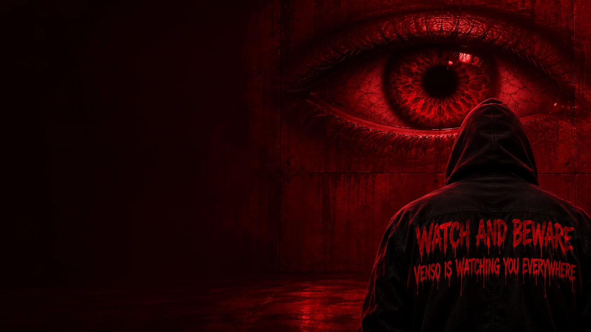

Un tableau de bord SOC pour rapprocher les alertes Wazuh et les blocages pfSense, examiner les preuves et exporter un dossier d’investigation.
La même adresse apparaît dans les deux journaux à une minute d’intervalle. Le dossier permet de vérifier ce rapprochement et de consigner la décision.